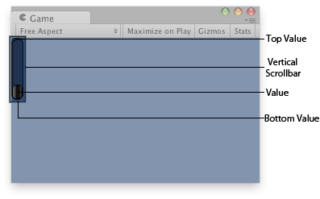

GUILayout.VerticalScrollbar
Parameters
| value | The position between min and max. | |
| size | How much can we see? | |
| topValue | The value at the top end of the scrollbar. | |
| bottomValue | The value at the bottom end of the scrollbar. | |
| style | The style to use for the scrollbar background. If left out, the horizontalScrollbar style from the current GUISkin is used. | |
| options | An optional list of layout options that specify extra layouting properties. Any values passed in here will override settings defined by the style. |
Returns
float The modified value. This can be changed by the user by dragging the scrollbar, or clicking the arrows at the end.
Description 描述
Make a vertical scrollbar.
A scrollbar control returns a float value that represents the position of the draggable "thumb" withtin the bar. You can use the value to adjust another GUI element to reflect the scroll position. However, most scrollable views can be handled more easily using a scroll view control.

Vertical Scrollbar in the Game View.
using UnityEngine;
public class ExampleScript : MonoBehaviour { float vSbarValue;
void OnGUI() { vSbarValue = GUILayout.VerticalScrollbar(vSbarValue, 1.0f, 10.0f, 0.0f); } }
The styles of the scroll buttons at the end of the bar can be located in the current skin by adding "upbutton" and "downbutton" to the style name. The name of the scrollbar thumb (the thing you drag) is found by appending "thumb" to the style name.
using UnityEngine;
public class ExampleScript : MonoBehaviour { float scrollPos = 0.5f;
// This will use the following style names to determine the size / placement of the buttons // MyVerticalScrollbarupbutton - Name of style used for the up button. // MyVerticalScrollbardownbutton - Name of style used for the down button. // MyVerticalScrollbarthumb - Name of style used for the draggable thumb. void OnGUI() { scrollPos = GUILayout.HorizontalScrollbar(scrollPos, 1, 0, 100, "MyVerticalScrollbar"); } }
See Also: BeginScrollView, HorizontalScrollbar.